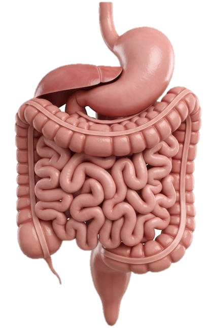

🧪 კუჭის მჟავიანობის ნეიტრალიზაციის სიმულაცია
🥛 1. სოდიანი წყლის მიღება (NaHCO
3
)
💊 2. მაგნიუმის ჰიდროქსიდის მიღება (Mg(OH)
2
)
🔄 საწყის მდგომარეობაში დაბრუნება

🔥 გულძმარვა (HCl-ის მაღალი დონე)
ქიმიური პროცესი და რეაქციის ტოლობა
საწყისი მდგომარეობა:
კუჭში არის ჭარბი მარილმჟავა (HCl), pH < 7
აირჩიეთ ერთ-ერთი ცდა ზემოთ მდებარე ღილაკებით, რათა დააკვირდეთ რეაქციასა და შედეგებს.
⚖️ ორგანიზმზე მოქმედების შედარება
მახასიათებელი
საჭმლის სოდა (NaHCO
3
)
მაგნიუმის ჰიდროქსიდი (Mg(OH)
2
)
რეაქციის ტოლობა
NaHCO
3
+ HCl ➔ NaCl + H
2
O + CO
2
↑
Mg(OH)
2
+ 2HCl ➔ MgCl
2
+ 2H
2
O
აირის (CO
2
) გამოყოფა
❌ დიახ (იწვევს შებერილობას)
✅ არა (აირი არ წარმოიქმნება)
მოქმედების ხასიათი
სწრაფი, მაგრამ ხანმოკლე (შესაძლოა „რიკოშეტის ეფექტი“)
რბილი, ხანგრძლივი და უსაფრთხო ნეიტრალიზაცია